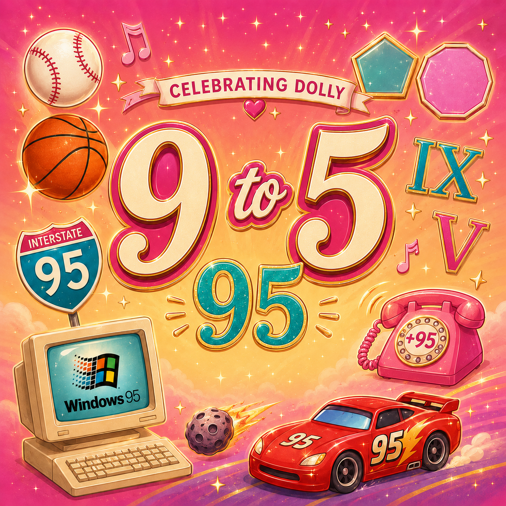

Dolly Through the Years
Celebrating Dolly
Start with Fact or Fiddle, compare Dolly moments in Which Came First, play 9 to 5, and finish with Timeline Scramble.

Second Challenge
Which came first?
Round 1 of 8
Score: 0
Results
Your Dolly Timeline Score
0 / 8
Rising Star
From the Grand Ole Opry to the Imagination Library, you just traveled through decades of Dolly history.
First Challenge
Fact or Fiddle
How well do you know Dolly? Decide whether each statement is a fact or a fiddle.
Question 1 of 14
Score: 0
Complete
You finished Fact or Fiddle!
Your Score
0 out of 14
Dolly's remarkable story includes music, movies, generosity, big dreams, and more than a few surprises.
Third Challenge
9 to 5
Dolly made 9 to 5 famous. Let's see what else you know about 9, 5, and 95!

Level 1 | 1 of 9
Pick 9 or 5
Sports Plays
Level 1 Complete!
You know your 9s and 5s.
Ready to put them together?
Level 2 | Question 1 of 10
Find the 95
95
95 Fact
Complete
You Crushed the 9 to 5!
Dolly made "9 to 5" famous. You just proved there is a whole lot more you can do with 9, 5, and 95!
Fourth Challenge
Timeline Scramble
Timeline Complete
You did it!
From the Smoky Mountains to millions of books, Dolly created quite a timeline.
Dolly Parton was honored internationally, with tributes appearing around the world. Landmarks were lit in pink, fans created memorials, and people gathered to celebrate her life and career. People remembered not only her music, but also her generosity, humor, and lifelong impact on children through the Imagination Library.